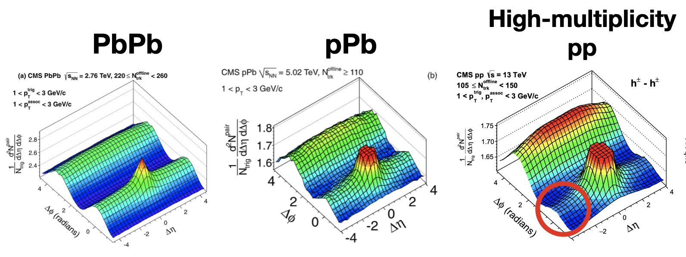
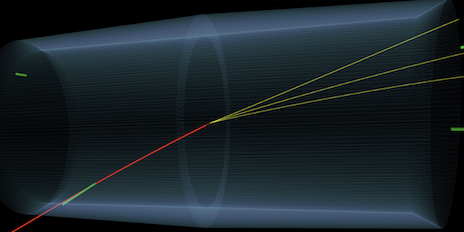
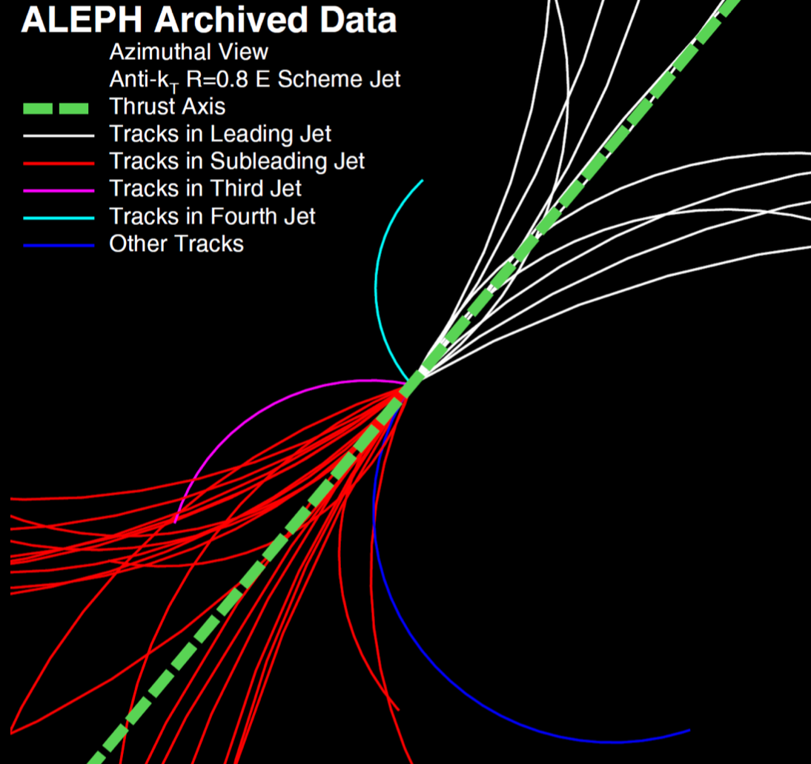

The extreme energies and particle densities created in heavy ion collisions are visually very impressive and allow us to study the quark-gluon plasma. However, the strong force also dictates the physical interactions that are studied using smaller collision systems. Many different types of collisions can be considered small - from the proton-ion and proton-proton collisions, to photon-ion and photon-photon collisions, and even electron-positron collisions. These collision systems share a common theme of having much lower energy and particle densities than heavy ion collisions, but they can be studied with incredible precision. The video below shows some simulations of electron-positron collisions at an energy of 91 gigaelectronvolts (GeV). The number of particles produced is much lower than in heavy ion collisions, but the simplicity of the system is advantageous for many studies!
Proton-ion collisions are a useful system to study as a reference for ion-ion collisions, because they allow studying the initial state of heavy ion collisions. One of the most important things that can be studied are the distributions of the quarks and gluons inside the nuclei, which are called nuclear parton distribution functions (nPDFs). Another exciting discovery was the presence of collective flow in proton-ion collisions, which is a phenomenon that was previously thought to only occur in heavy ion collisions. Later, a similar signal was observed in proton-proton collisions that produce a large number of particles. This was a surprising discovery, and it is still not fully understood! The figure below shows an example of a 'ridge' in the distribution of particles produced in a proton-proton collision (in the red circle) compared to proton-lead and lead-lead collisions. One interpretation of these signals is that a small droplet of QGP is potentially formed!

The lead ions used in the LHC are fully ionized, so they have an electric charge of 82+. This means there is a massive electric field surround the ions. Sometimes two ions can interact via the electromagnetic force instead of the strong force. These are called ultraperipheral collisions (UPCs). In these collisions, the ions do not actually collide, but instead the electromagnetic field of one ion interacts with the other ion. This process can be treated as a photon-ion collision, or sometimes even a photon-photon collision, which is a different type of small system. Below is an event display where two photons interact to produce a pair of tau leptons, one of which decays to 3 pions. This is a very rare process, but it is possible to study it in UPCs! UPCs are also a way to do physics similar to what will be done at the upcoming Electron-Ion Collider.

A final type of small system is electron-positron collisions. There is not currently an operational electron-positron collider that can collide particles at energies above a few 10s of gigaelectronvolts (GeV). However, we can look at archived data from 30 years ago and apply modern methods to it to learn new things! I am part of a group of people looking at data from the ALEPH experiment, which was operational in the 1990s. Luckily, they stored all their data so we can still use it today! Below is an event display we made from data that was gathered around 1991. About 40 particles are produced, which is quite a lot for an electron-positron collision! The goal of studying these collisions is to learn about the strong force in an exceptionally clean experimental environment, and to make connections to what we know from proton-proton and heavy ion collisions.
